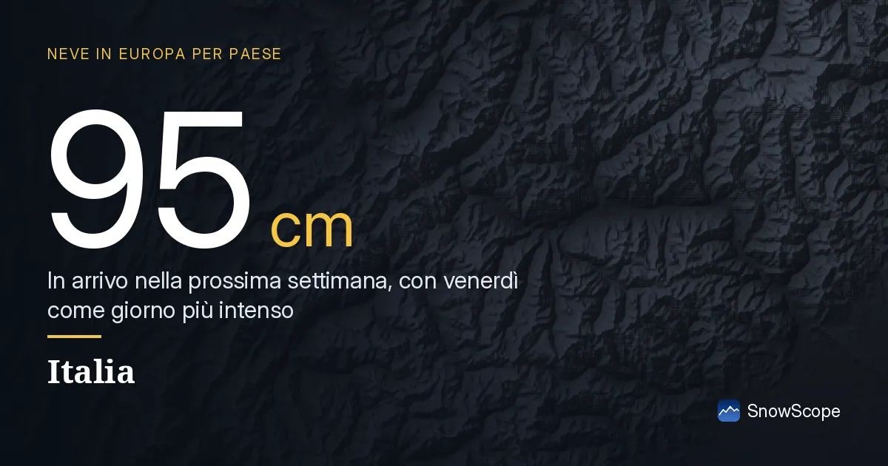
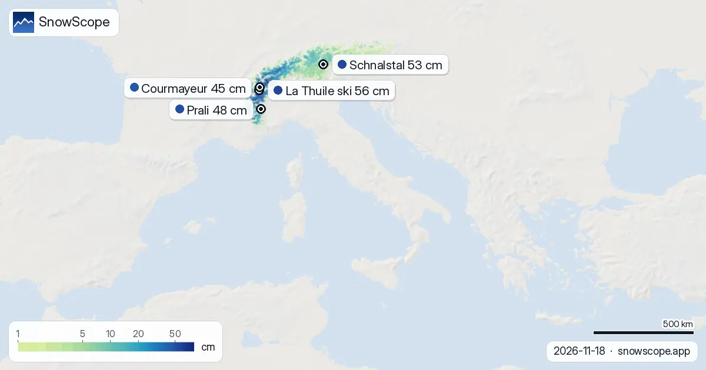

Italia: 95 cm in arrivo nella prossima settimana, con venerdì come giorno più intenso
Una tempesta invernale significativa si sta avvicinando all'Italia. Nei prossimi 7 giorni, le montagne potrebbero ricevere fino a 95 cm di neve fresca, molto più dei tipici 44 cm caduti nelle ultime 72 ore.
Le previsioni neve in tempo reale per La Thuile ski nell'app SnowScopeAltezza neve, allerte powder e mappa 3D, gratis.
Cosa arriva: una settimana di neve costante
Lo schema è cambiato. Dopo nevicate modeste negli ultimi tre giorni (44 cm di picco su tutto il paese), il nostro modello ora traccia un sistema molto più grande in arrivo. Tra ora e il 25 novembre, l'Italia probabilmente riceverà fino a 95 cm di neve fresca alle alte quote, con venerdì 20 novembre come punto focale: quel giorno da solo potrebbe portare 34 cm.
Questo è il tipo di evento che cambia le condizioni di inizio stagione. La Valle d'Aosta ha già catturato 156 cm in 72 ore e ne riceverà ancora. Le Alpi Piemontesi, con 67 cm negli ultimi tre giorni, vedranno aggiunte sostanziali. Anche le aree che sono state più secche, come la regione del Passo Stelvio, sono destinate a ricevere nevicate più intense mentre il sistema si sviluppa.
| Località | Altezza neve | Neve fresca, 72 h | In arrivo, prossimi giorni | Quota max |
|---|---|---|---|---|
| La Thuile ski | 56 cm | 80 cm | 91 cm | 2.608 m |
| Schnalstal | 53 cm | 10 cm | 16 cm | 3.200 m |
| Prali | 48 cm | 30 cm | 32 cm | – |
| Courmayeur | 45 cm | 74 cm | 96 cm | 2.749 m |
| Passo Stelvio | 38 cm | 8 cm | 16 cm | 3.355 m |

Venerdì e i giorni seguenti: il ritmo della tempesta
Venerdì 20 novembre è il giorno di massima intensità. Dopo di che, la neve continuerà durante la settimana ma a un ritmo più gentile. I prossimi tre giorni (19-21 novembre) potrebbero depositare fino a 55 cm a seconda dell'esatta quota e dell'esposizione del versante. Al contrario, i giorni dopo venerdì rientrano in un ritmo più tipico di novembre, anche se il nostro modello segnala comunque totali significativi.
I tempi sono importanti in montagna. La visibilità al mattino presto venerdì sarà scarsa; nel pomeriggio, a seconda di quanto velocemente il sistema si muova, le condizioni potrebbero migliorare leggermente. Pianificate il vostro approccio di conseguenza se state per salire.

Dove la neve colpisce più forte
Le Alpi occidentali cattureranno la maggior parte di questo evento. La Thuile ski è prevista guadagnare 91 cm in tre giorni e si trova già su 56 cm misurati a metà novembre. Courmayeur, con 45 cm al suolo oggi, dovrebbe ricevere 96 cm nei prossimi tre giorni—un raddoppio della sua base attuale. Questi sono i comprensori più direttamente nel percorso della tempesta.
Le quote più elevate sopra 2500 m sono già ben coperte (20 cm di profondità media, 99 percento copertura nevosa), e ne trarranno il massimo beneficio. Sotto 2000 m, la copertura nevosa rimane frammentaria e sottile (1 cm di profondità media tra 1500 e 2000 m), quindi le transizioni pioggia-neve e lo scioglimento rimangono rischi alle quote più basse e sui versanti esposti a sud.
Come questo si confronta con la media di novembre
Gli eventi nevosi di inizio novembre non sono insoliti nelle Alpi, ma il volume previsto qui è ben al di sopra della mediana. A Courmayeur, tipicamente vediamo intorno a 22 cm entro metà novembre; la misurazione odierna di 45 cm è già il 223 percento della norma. La Thuile, a 56 cm, è in esecuzione al 152 percento della sua media climatologica per questa data. Questo è un buon inizio di stagione, non un evento anomalo.
La sfida è che la base è ancora sottile alle quote intermedie. Le rocce e le zone sottili rimarranno visibili anche dopo la neve di venerdì, specialmente sui versanti esposti a sud o sudest.
Guardando la copertura e la quota neve
L'Italia attualmente ha neve sul 21 percento delle sue terre alte—circa 19.640 km² dei 93.660 km² che monitoriamo. La quota neve si trova a 1700 m oggi. Dopo l'evento di venerdì, prevediamo che la quota scenda e la copertura aumenti notevolmente, in particolare nella Valle d'Aosta e in Piemonte. La prossima settimana, la quota bianca dovrebbe avvicinarsi al 30-35 percento dell'area mappata.
La settimana scorsa è stata volatile. Sette giorni fa, 21.600 km² erano ricoperti di neve; ieri è sceso a 19.930 km², poi si è leggermente ripreso a 19.640 km² oggi. Questo movimento riflette il pattern caldo e instabile che ora si sta rompendo. Il sistema in arrivo segna una vera svolta stagionale.
Cosa osservare e dove si trova il premio
Se state cercando profondità e stabilità, le Alpi occidentali—in particolare i comprensori della Valle d'Aosta—sono il vostro obiettivo. La Thuile ski e Courmayeur saranno i vincitori dopo venerdì. Schnalstal e Passo Stelvio, pur essendo nella portata della tempesta, stanno ricevendo meno neve fresca (16 cm e 16 cm rispettivamente in tre giorni) perché si trovano leggermente a nord e a est dell'asse di precipitazione più intenso.
Il giorno più nevoso per tutta l'Italia è venerdì 20 novembre. Ciò non significa che potete sciare solo allora; venerdì è semplicemente quando arriva la maggior quantità di neve in una finestra di 24 ore. L'evento intero si estende per la settimana, e sabato e domenica potranno offrire una visibilità migliore e un viaggio più facile in montagna, con neve fresca ancora al suolo e meno precipitazioni in arrivo.
Consigli per sciatori
- Puntate sulle Alpi occidentali (Valle d'Aosta e massiccio del Monte Bianco) per i guadagni di profondità nevosa più affidabili nei prossimi 7 giorni. Anche le Alpi Piemontesi vedranno nevicate intense ma leggermente inferiori rispetto alle zone più occidentali.
- Venerdì 20 novembre porterà precipitazioni intense; preparatevi a scarsa visibilità e pericolo di valanghe. Controllate il bollettino valanghivo ufficiale prima di avventurarvi fuoripista, poiché la neve fresca su terreno ripido può essere instabile, specialmente dove si lega a neve vecchia sottile sotto 2000 m.
- Restate sopra 2000 m se possibile. La quota neve è attualmente a 1700 m; i versanti più bassi vedranno transizioni pioggia-neve e scioglimento parziale durante l'evento, in particolare sui versanti esposti a sud.
- Il pomeriggio di venerdì potrebbe offrire una visibilità migliore rispetto al mattino di venerdì poiché il nucleo del sistema passa; sabato e domenica potrebbero essere eccellenti per sciare con neve fresca e condizioni più chiare.
- Utilizzate la mappa live di SnowScope per tracciare la quota neve e la copertura dopo venerdì per trovare la migliore transizione tra neve fresca e base stabile.
Su questi numeri
Le altezze neve delle località sono la neve più alta sui pendii superiori secondo il modello neve di SnowScope (circa 1 km, calcolo del 18 novembre); sono stime per un'area, non una misura in un punto. I valori delle stazioni sono misure alla data indicata. Le previsioni possono cambiare. Leggi sempre il bollettino valanghe ufficiale prima del fuoripista.
Cita questo articolo
Per ricerca, didattica o stampa: numeri e grafici sono liberamente riutilizzabili con licenza CC BY 4.0 citando così.
SnowScope (2026), Italia: 95 cm in arrivo nella prossima settimana, con venerdì come giorno più intenso, https://snowscope.app/blog/it/2026/11/italy-snow-on-the-way-18-november-2026.html, consultato il 2026-11-18
SnowScope (Atlas Labs). (2026, November 18). Italia: 95 cm in arrivo nella prossima settimana, con venerdì come giorno più intenso. SnowScope snow reports. https://snowscope.app/blog/it/2026/11/italy-snow-on-the-way-18-november-2026.html
BibTeX
@misc{snowscope2026italysnowontheway18novem,
author = {{SnowScope (Atlas Labs)}},
title = {Italia: 95 cm in arrivo nella prossima settimana, con venerdì come giorno più intenso},
year = {2026},
month = nov,
howpublished = {\url{https://snowscope.app/blog/it/2026/11/italy-snow-on-the-way-18-november-2026.html}},
note = {Published 2026-11-18 11:13 UTC; accessed 2026-11-18}
}· CC BY 4.0 · Metodi, dati e strumenti →
La Thuile ski: neve e temperatura per quota, quest'inverno vs lo scorso (strumenti) →
Segui La Thuile ski
Gratis: un messaggio quando arriva la neve e il meteo ogni mattina.